散客合作伙伴管理 · 业务操作培训
按角色熟悉建档、账户、售票、充值、临时客户回款、查询与退款。以下画面均来自本期 V3.2 方案原型，仅用于说明操作位置和业务口径。
1. 先弄清三个概念
企业、个人合作伙伴共用一个对外账户号，但账户号下同时有“挂帐”和“预付款”两类账户。档案中的“默认账户类型”决定后续充值、消费和退款当前走哪一类；已经发生的记录保留当时实际使用的账户类型。
- “合作类型”回答客户是谁：企业、个人或公共临时客户。
- “账户类型”回答本笔业务归属哪个账户：挂帐或预付款。
- “处理操作”回答发生了什么：充值、消费、退款、其他收入、调账或系统生成的调账-往来。
- 公共临时客户只有挂帐账户；订单级“未回款 / 已回款”只适用于它的挂帐订单。
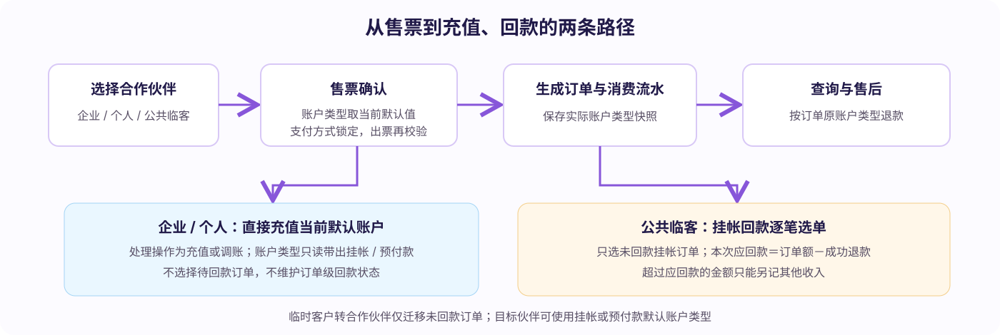
业务流程图可点击放大；下方操作规则以 V3.2 正文为准。
2. 合作伙伴管理员：建档与状态
- 进入后台“合作伙伴管理”，按合作类型、名称、默认账户类型、负责人或状态查询；点击“新增”。
- 企业或个人填写唯一的合作伙伴名称、联系人、联系电话，选择启用的景区对接负责人，并选择“默认账户类型：挂帐 / 预付款”。
- 保存后系统生成一个账户号，同时建立挂帐与预付款两类账户；公共临时客户全系统只允许一条，固定挂帐并默认启用。
- 停止新售票可禁用合作伙伴；历史订单、充值、退款和查询不因此消失。已有资金记录的伙伴不能删除。
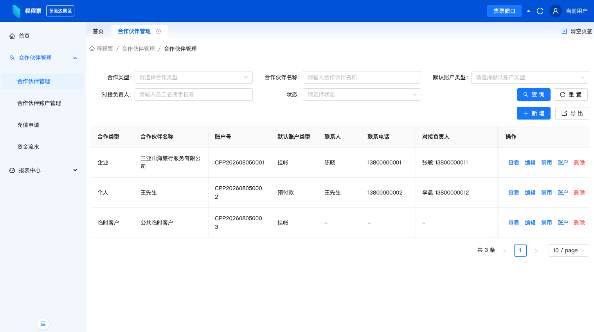
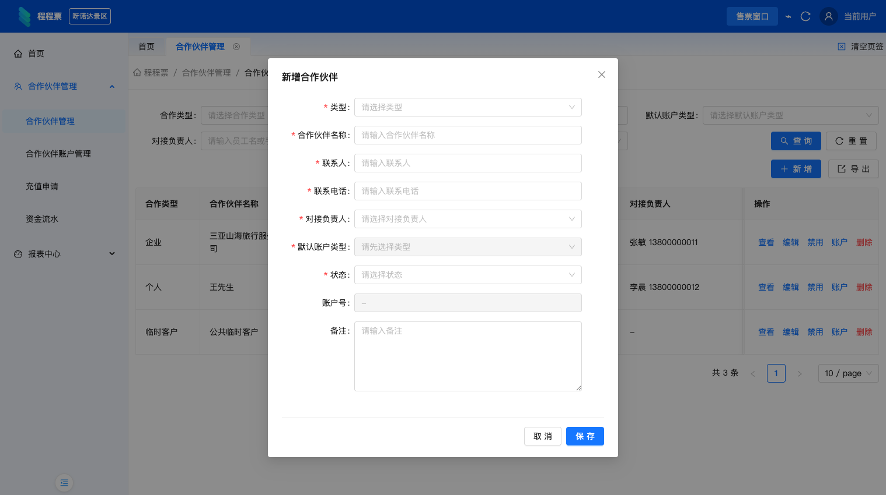
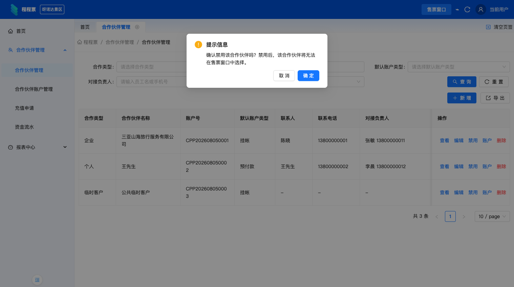
3. 财务或管理员：账户与额度
“合作伙伴账户管理”分为挂帐管理和预付款管理。企业、个人会出现在两个标签；公共临时客户只在挂帐管理。列表首列的企业、个人、临时客户是“合作类型”，不是账户类型。
- 挂帐金额可以正、负或为 0。开启额度限制后，可用挂帐额度＝max（挂帐额度＋当前挂帐金额，0）；关闭时显示“无限额”。
- “调整额度”填写调整后金额和选填原因，保存前需确认；调整不产生充值或资金流水，可通过“额度记录”追溯。
- 预付款也允许正负余额；开启额度限制时余额不足不得继续预付款消费，关闭时可扣减至负数。预付款没有“调整数值额度”。
- 从档案点击“账户”或从账户行点击“充值记录 / 资金流水”，应携带账户号和当前账户类型进入相应标签与筛选。
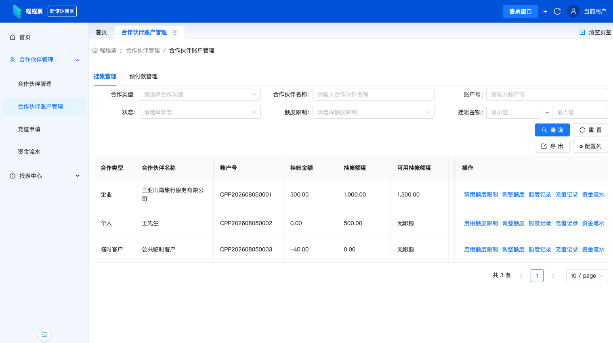
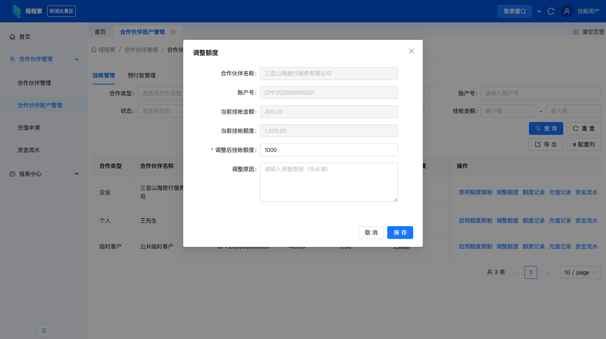
4. 售票员：选择伙伴并确认出票
企业、个人长期合作伙伴
- 进入售票的“临时/长期合作伙伴”标签，点击“请选择合作伙伴”，查询并单选启用的企业或个人。
- 右侧按该伙伴默认账户类型显示挂帐金额与可用额度，或预付款余额与额度限制；核对负责人、联系人和票款。
- 主页面及“支付订单确认”中的支付方式均取当前默认账户类型，不允许切换。若要换账户类型，须先按档案规则变更默认值。
- 点击“确认下单”只是打开确认弹窗；点击“确认出票”时才重新校验伙伴状态、账户状态和可用资金并落单。
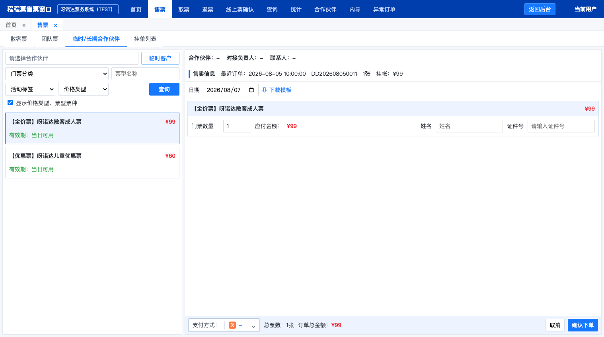
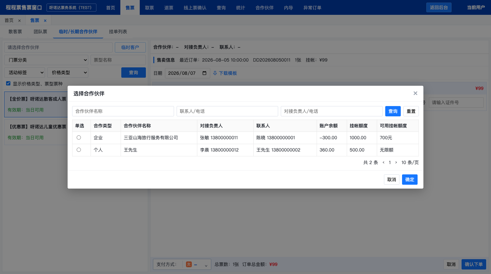
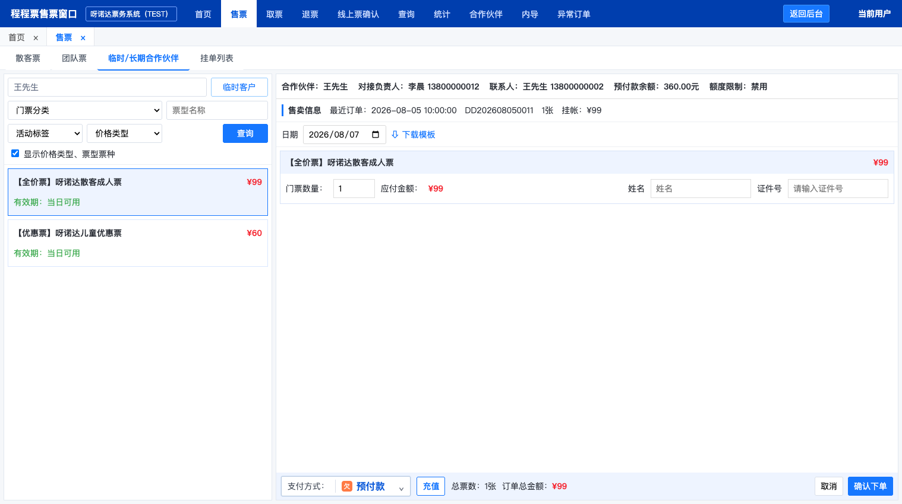
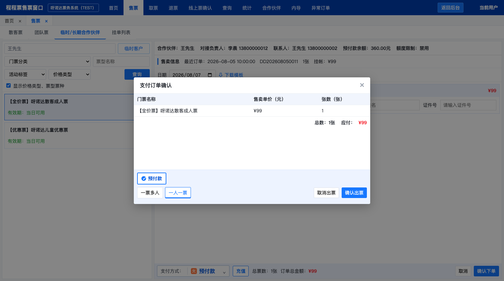
公共临时客户
点击输入框旁“临时客户”直接选择唯一公共临时客户。必须填写本单客户名称和订单对接负责人；该负责人仅存订单快照，不回写档案。支付方式固定挂帐，不能切换预付款，也不显示固定伙伴的售票页充值按钮。
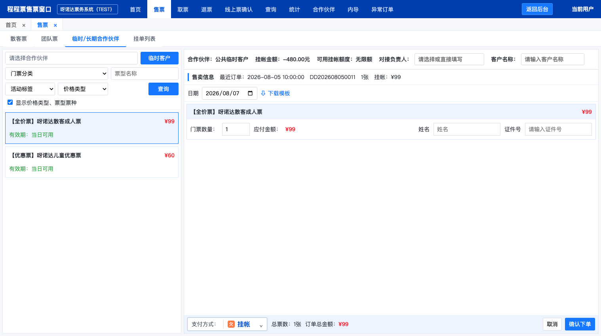
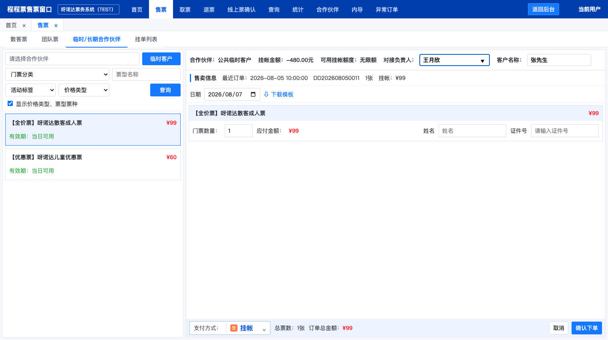
5. 财务：充值、公共临客回款与迁移
企业、个人：直接给默认账户充值
- 后台“充值申请 → 账户充值”点击“充值”，选择合作伙伴；账户号和账户类型随该伙伴当前默认值只读带出。
- 人工处理操作只选“充值”或“调账”。充值金额须大于 0，填写支付日期、现金或银行转账、可选付款人/备注/附件；调账可正可负但不能为 0，不填写支付时间和方式。
- 企业、个人的充值直接作用于当前默认账户，不选待回款订单；充值成功后到列表或资金流水核对处理操作和账户类型。
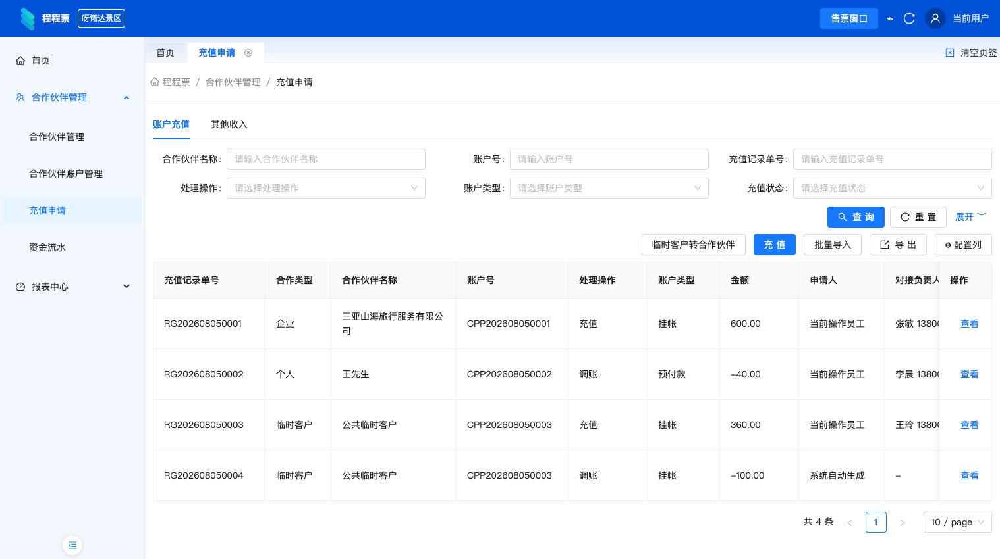
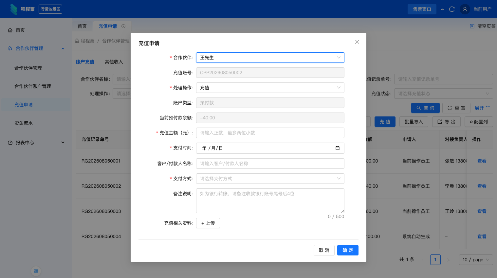
公共临时客户：挂帐回款必须匹配订单
选择公共临时客户做“充值”时，先填充值金额，再点击“选择待回款订单”。仅可选择其未回款、应回款金额大于 0 的挂帐订单；本次应回款金额＝订单总额－已成功退款金额。整笔回款，不支持部分平账，已选应回款合计不得超过本次充值金额。
若款项多于已选订单应回款额，超出部分只能选择“计入其他收入”，生成另一条独立记录；不能留在共享的临时客户账户。多笔订单的客户名称或负责人不一致时须人工确认。临时客户的人工“调账”不匹配订单。
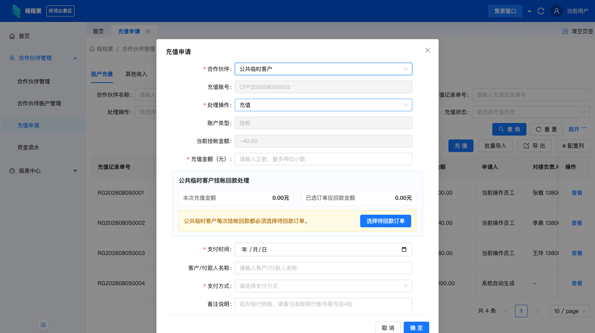
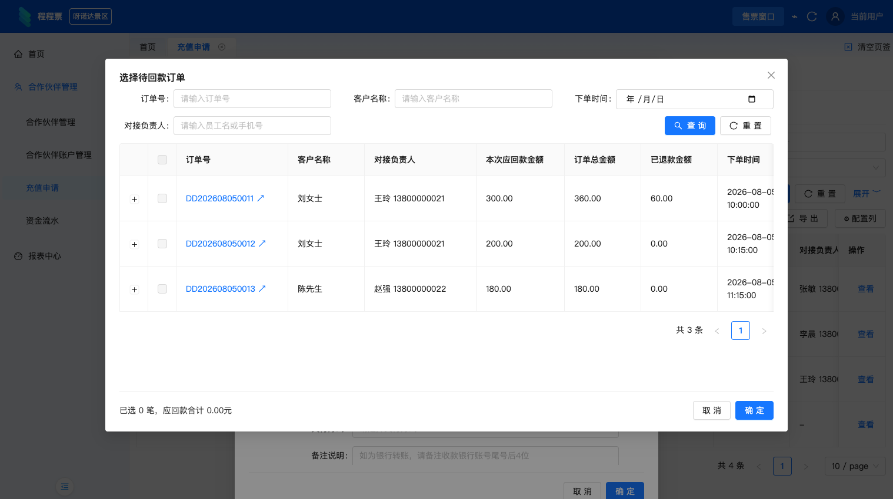
临时客户转长期合作伙伴
如果客户需要转为长期企业或个人，可点“临时客户转合作伙伴”，仅选择公共临时客户未回款挂帐订单，然后新建或选择启用的长期伙伴。目标伙伴可设挂帐或预付款为默认账户类型；迁移按目标当前默认账户类型重新归属订单和账户，公共临客原往来保留审计记录并生成“调账-往来”。已回款订单不在候选中。
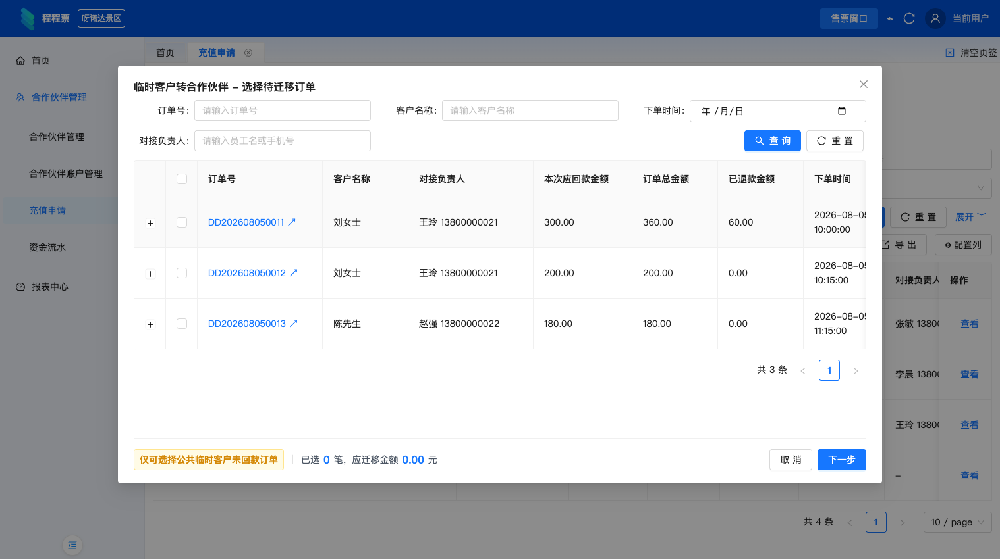
6. 查询、核对与留档
- “充值申请”账户充值和“其他收入”是两个标签。其他收入由相应业务自动生成，不在人工充值的处理操作选项里；它不改变挂帐或预付款账户金额。
- 充值详情同时看“处理操作”“账户类型”“金额”“支付时间”和附件；“充值”并不能单独说明走的是挂帐还是预付款。
- “资金流水”按合作类型、账户类型及处理操作查询；调账-往来是系统生成的处理操作，按相应筛选查看。公共临客订单的已回款状态只标在对应消费流水。
- 合作伙伴对帐单在后台“报表中心”，按日或按月选统计时间和合作伙伴查询；导出须核对当前筛选条件。
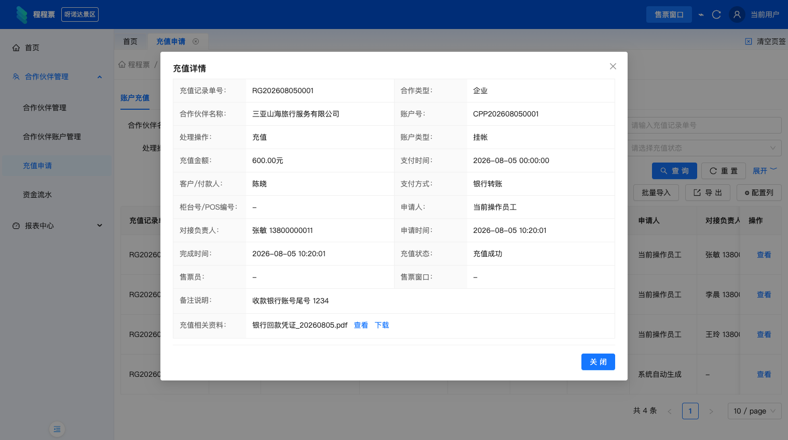
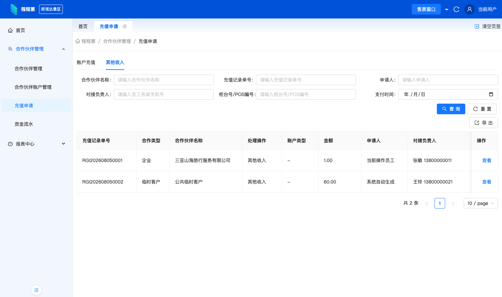
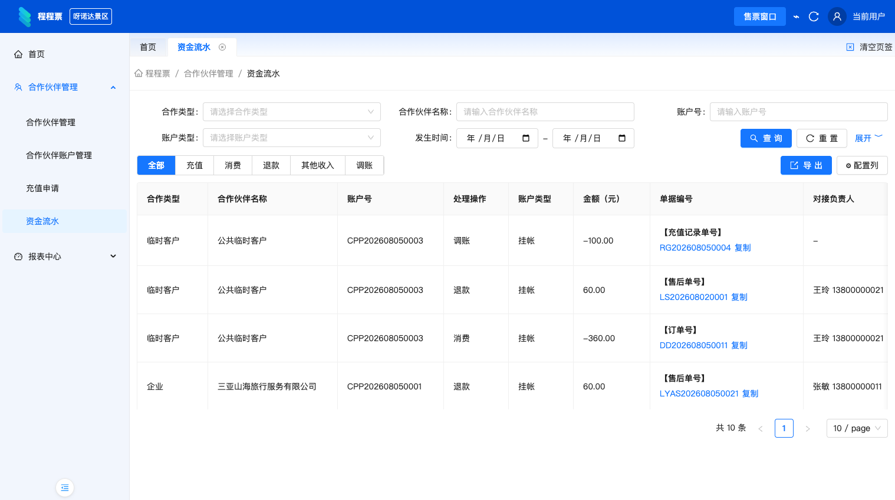
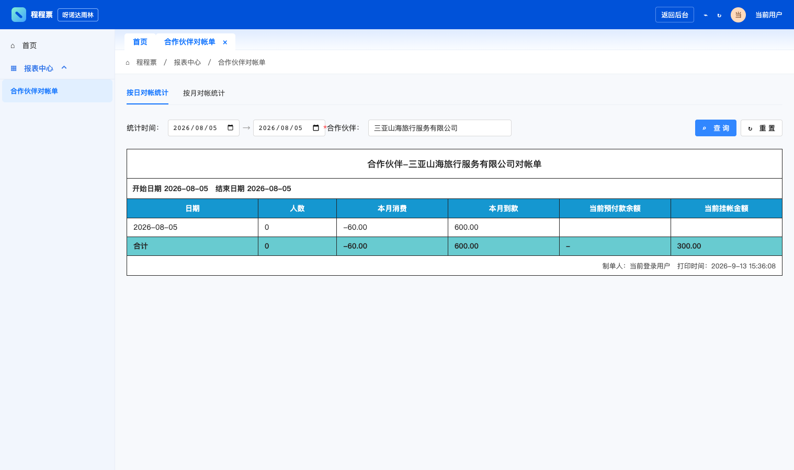
7. 售后：订单归属与退款
售后沿用原有退款入口，系统按订单出票时保存的实际账户类型回退金额；后来变更默认账户类型，不会改变历史订单退款的归属。
| 订单情形 | 退款后需要核对 |
|---|---|
| 企业、个人伙伴订单 | 退款加回原订单的挂帐或预付款账户；不按当前默认值改写。 |
| 公共临客未回款挂帐订单 | 挂帐金额增加，订单本次应回款额随成功退款减少；全额退款后不再进入待回款候选。 |
| 公共临客已回款挂帐订单 | 产生正常退款正数流水，再产生同额负数自动调账；净额不因该退款增加，可在调账详情查看关联订单和售后单。 |
| 已迁移订单 | 订单详情展示合作伙伴变更记录；后续退款归属迁移后的目标合作伙伴。 |
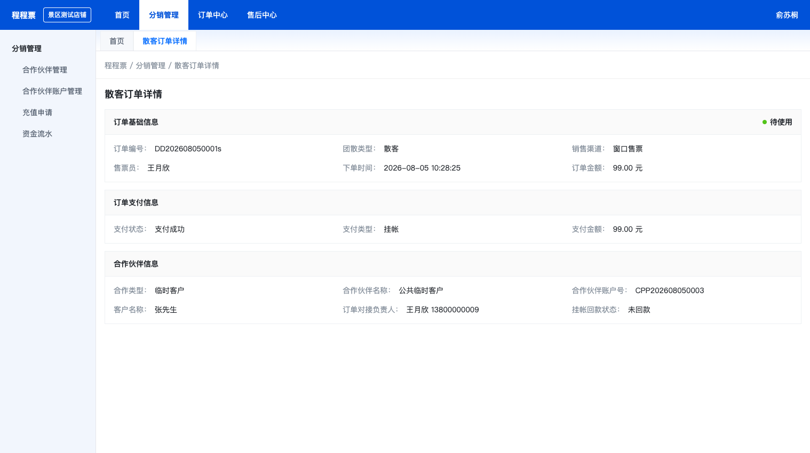
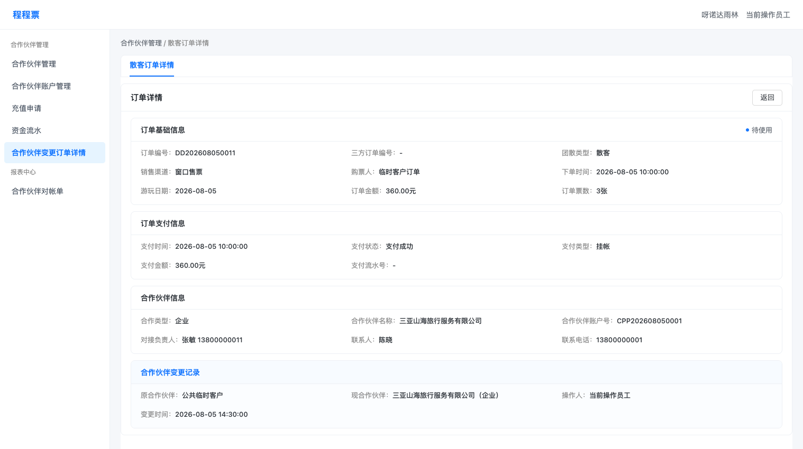
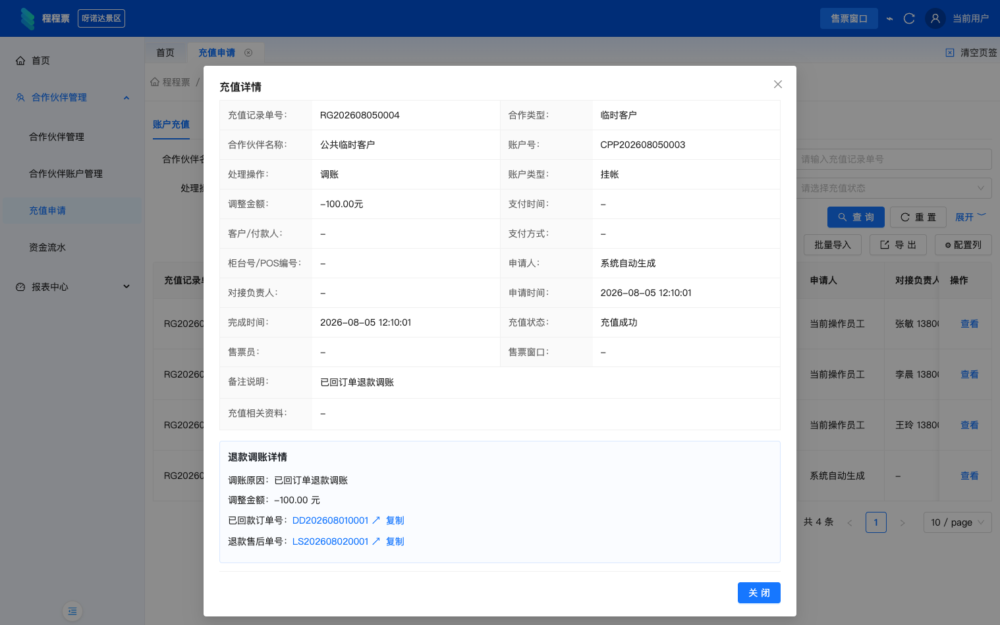
8. 常见问题与上岗自查
| 问题 | 业务口径 |
|---|---|
| 一个合作伙伴只有一个账户吗？ | 一个对外账户号；企业和个人在其下同时有挂帐、预付款两类账户，默认账户类型决定后续业务走哪类。 |
| 充值时能手选挂帐或预付款吗？ | 不能。普通充值按该伙伴当前默认账户类型只读带出；如需切换，先按档案规则处理原账户金额。 |
| 长期伙伴挂帐充值要勾订单吗？ | 不要。逐笔选单回款只针对公共临时客户。 |
| 公共临客可以转成预付款客户吗？ | 可将未回款订单迁往新建或已有的企业/个人长期伙伴，目标伙伴可以预付款为默认账户类型；公共临客自身仍只有挂帐账户。 |
| 其他收入能在后台手工选吗？ | 不在账户充值新增的处理操作选项中，由相应独立业务自动生成。 |
| 退款后为何出现调账？ | 公共临客已回款订单退款会自动产生负数调账，防止共享挂帐账户因退款增加净额。 |
- 能区分合作类型、默认账户类型与处理操作。
- 能检查挂帐可用额度和预付款额度限制。
- 知道支付确认页的账户类型不可切换。
- 只对公共临时客户挂帐回款逐笔选单。
- 能在详情与流水中按单据编号追溯。
- 能在报表中心查看合作伙伴对帐单。